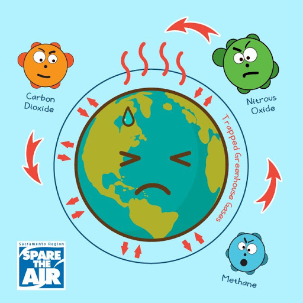

HIV works by inserting itself into the genome of its
host CD4 white blood cells, and while it can remain dormant for years,
and there are medical treatments to reduce its effects, there are
currently no cures or treatments to permanently inactivate the virus.
In 2015, scientists used CRISPR to cut HIV out of living cells of a
patient in the laboratory. The following year, scientists carried out
an experiment with rats which had HIV. BY injecting CRISPR into the
rats’ tails, they were able to remove 48% of the virus from the DNA
of their cells. In 2020, scientists from Temple University and
University of Nebraska Medical Center showed that in treating mice
with Human T-Cells they were able to eradicate HIV by first giving
long acting anti-retrovirals and then introducing CRISPR. At the end
of the experiment, the scientists could not find any trace of HIV in
9 of the 23 mice that received the treatment.
Treat and Cure HIV
Researchers have used the Cas9-CRISPR system to create
mosquitoes that are resistant to the parasite that causes malaria
(Plasmodium falciparum). Scientists using Cas9-CRISPR edited the genome
of the mosquitos to remove certain genes and replace them with human
engineered DNA constructs. These new genes make the mosquitoes resistant
to the parasite that causes malaria. When the new genes were inserted
into a male mosquito, approximately 99% of the offspring carried the new
gene and resistance. However only 60 to 70% of offspring from female
mosquitoes that had the new genes that caused them to be resistant to
the parasite. Thus more work needs to be done to ensure that all o
ffspring can carry the genetic mutation.
Create Malaria-Free Mosquitoes
While scientists have developed and commercialized
methods for treating certain cancers with modified T-Cells (CAR-T therapies),
these are not CRISPR based. They only add a protein that will allow the
T-cells to attack the cancer. In 2019, scientists at the University of
Pennsylvania used CRISPR to genetically modify a patented T-cells to better
“see” and kill the cancer. They equipped the T-Cells with a receptor that
allows it to attach to the “NY-ESO-1” molecule on the surface of certain
cancer cells. They also removed certain genes that reduce the ability of the
T-cells to kill the cancer cells once the T-cell attaches itself to the
cancer cell. In human testing, they found it was safe in the initial people
they tested (2 with advanced multiple myeloma and one with metastatic sarcoma).
The patients experienced some side effects, but these were most likely due to the
chemotherapy. Further work needs to be done, as only 10% of the T-cells used for
the therapy had all the modifications that the scientists wanted to make, and
some cells had off-target modifications, which did not cause new cancers.
Eliminate Cancer
George Church, one of the scientists involved in developing the
CRISPR-Cas9 gene editing system, founded a company to grow organs that can be implanted
into humans in animals such as pigs. This requires significant editing of the genes
of the organ, so that the human body does not reject the organ. So far trials have
moved from just growing the organs, to now being able to implant them in primates.
Further work needs to be done to see if these organs will survive in primates, and
then be able to be implanted in humans.
Grow Human-Transplantable Organs in Animals
Editas medicine is testing the ability to use CRISPR to edit
genomes in cells in the eye to treat Leber’s Congenital Amaurosis (LCA). In this
disease a person’s eye does not react to light, and transmit the information properly
to the brain. The cause of this disease is mutations in upto 14 different genes in
the eye. Editas is looking at how to treat this using CRISPR, as the cells directly
impacted are only in the eye. Also, scientists are looking at treating Retinitis
Pigmentosa using CRISPR. People with Retinitis Pigmentosa have mutations in more
than 60 genes that cause cellular degradation in rod photoreceptor cells to
dysfunction and degenerate over time. Once this happens, a person loses their
peripheral vision, and then as the cone photoreceptor cells have to work harder,
they start to fail. Scientists have used CRISPR to convert some cone cells into
rod cells, and in the hope of giving people limited sight again, with the aim of
restoring full sight in the future.
Treat Blindness
Humans have been breeding plants to improve crop yields and increase
disease resistance for millennia using traditional breeding techniques. However,
scientists are now using Cas9-CRISPR to genetically modify plants to increase resistance
to diseases. Scientists at Rutgers University are modifying wine grapes to resist
Downy Mildew and to modifying certain golf course grass breads to resist Dollar Spot
Disease. If successful, the need for the use of fungicides would significantly reduce
the treatment of these diseases, and scientists would be able to develop new heartier
crops for the agriculture industry.
Make Super Plants
If scientists are able to identify the genetic causes of ageing,
then using CRISPR-Cas9, they will be able to edit those genes and remove the
impact of aging. There could be a future where people live to the age of 100+
years regularly since everyone’s genetic make-up could be regulated to ensure that
the genes that cause aging no longer impact them.
Remove Aging
CRISPR is also being used to develop treatments for sickle
cell anemia. In this condition, having two bad copies of the Beta-globin leads to
severe symptoms in the patient, but having only one bad copy leads to much less
severe symptoms. As a result, CRISPR is being used by scientists to repair one of
the bad copies if a patient has two bad copies, and the scientists then
reintroduce the edited genes into the bloodstream, thus decreasing the severity
of the patient’s sickle cell anemia symptoms.
Treat Sickle Cell Anemia
CRISPR is currently being used to make biofuels a viable
alternative to fossil fuels. Scientists use CRISPR on key bacteria that possess
natural capabilities to produce biofuels by breaking down plant cell walls or
waste products like methane in landfills. This technology works on certain
species of cyanobacteria and algae to convert these species to ones that can
create biofuels while continuing to grow. This requires complex genetic
engineering, but CRISPR is helping to make biofuels a feasible option because
the technology is so efficient and precise.
Produce Biofuels

CRISPR is also being used to help reduce the amount of greenhouse
gas emissions in the atmosphere. The burning of fossil fuels is not the only
contributor to greenhouse gases - atmospheric methane is thought to come mainly from
bacteria, which exist in the guts of cows and in flooded rice fields. In order to
reduce the amount of methane released into the atmosphere, scientists are using CRISPR
to engineer cows so they don’t release as much methane and to engineer rice so more
methane is kept in the ground rather than released.
Reduce Greenhouse Gas Emissions
With human activity increasing throughout the years, animals are ones that are
negatively affected. Many have lost their habitats or food due to the changing landscape. This leads to more
animals becoming endangered or even extinct. With CRISPR, the genes in the endangered animals can be
slightly altered to create offspring that are more suited toward these new landscapes.
Save Endangered Species
Paralysis may occur when nerves are damaged and proper signals can not be sent to the
brain. This leads to a loss of muscle use which can be temporary or long term. In the future, there may be a
way to use CRISPR to create cells that can repair the damaged nerves and reconnect the muscles to the brain.
This would allow for corrections to be made, and the paralysis would be cured.
 George Church, one of the scientists involved in developing the CRISPR-Cas9 gene editing system, founded a company to grow organs that can be implanted into humans in animals such as pigs. This requires significant editing of the genes of the organ, so that the human body does not reject the organ. So far trials have moved from just growing the organs, to now being able to implant them in primates. Further work needs to be done to see if these organs will survive in primates, and then be able to be implanted in humans.
George Church, one of the scientists involved in developing the CRISPR-Cas9 gene editing system, founded a company to grow organs that can be implanted into humans in animals such as pigs. This requires significant editing of the genes of the organ, so that the human body does not reject the organ. So far trials have moved from just growing the organs, to now being able to implant them in primates. Further work needs to be done to see if these organs will survive in primates, and then be able to be implanted in humans.